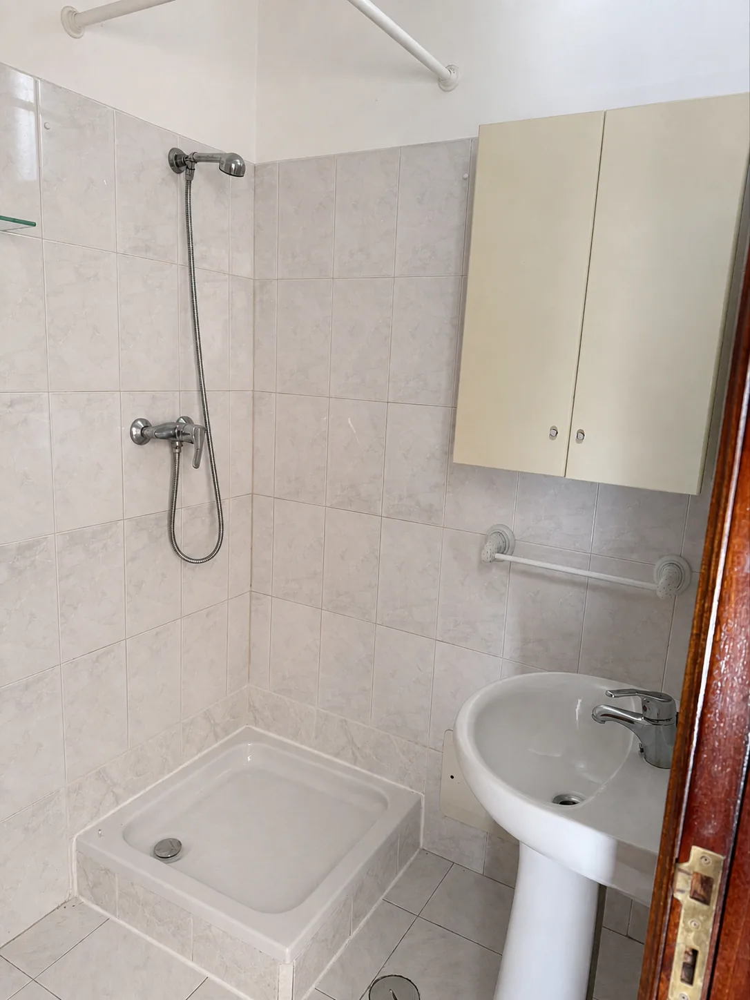
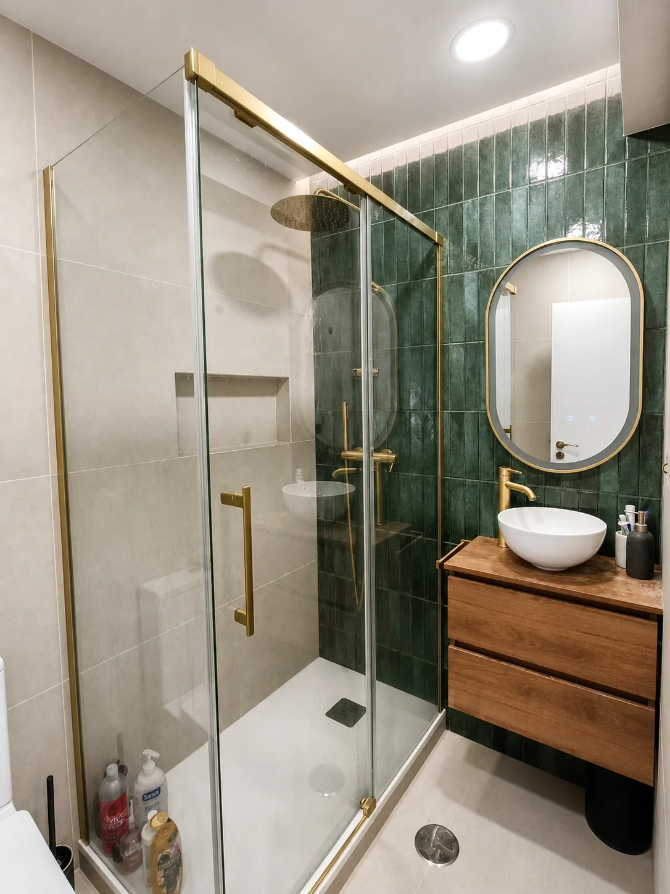
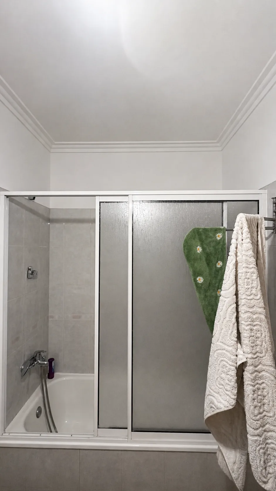
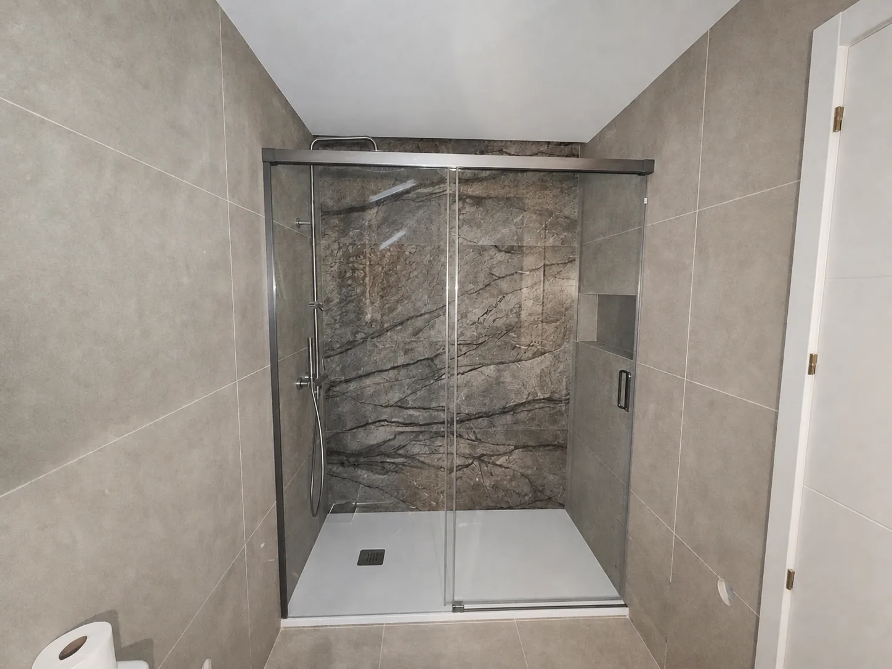
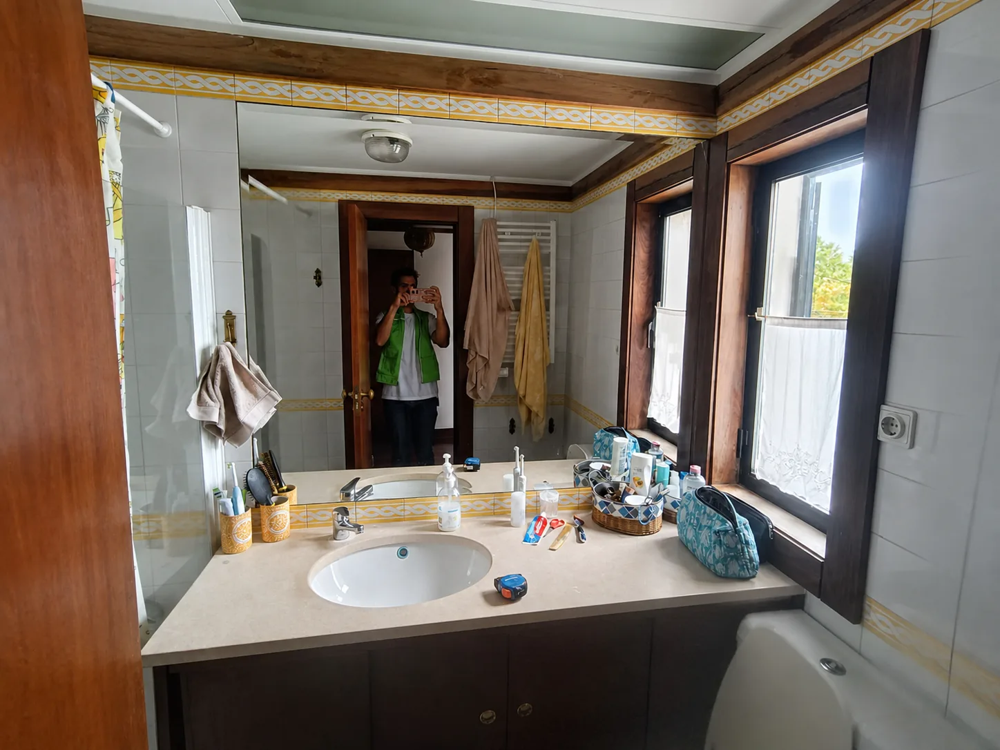
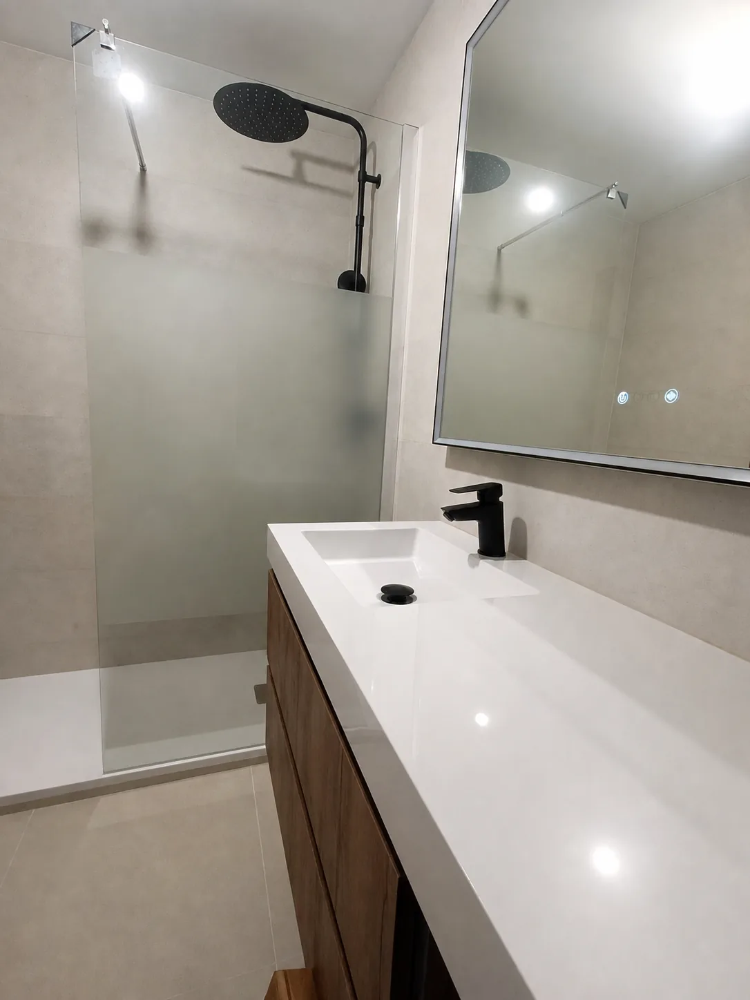
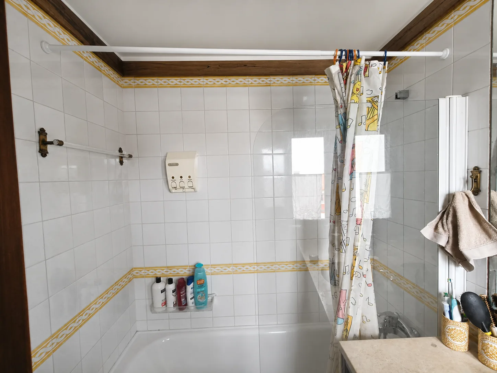
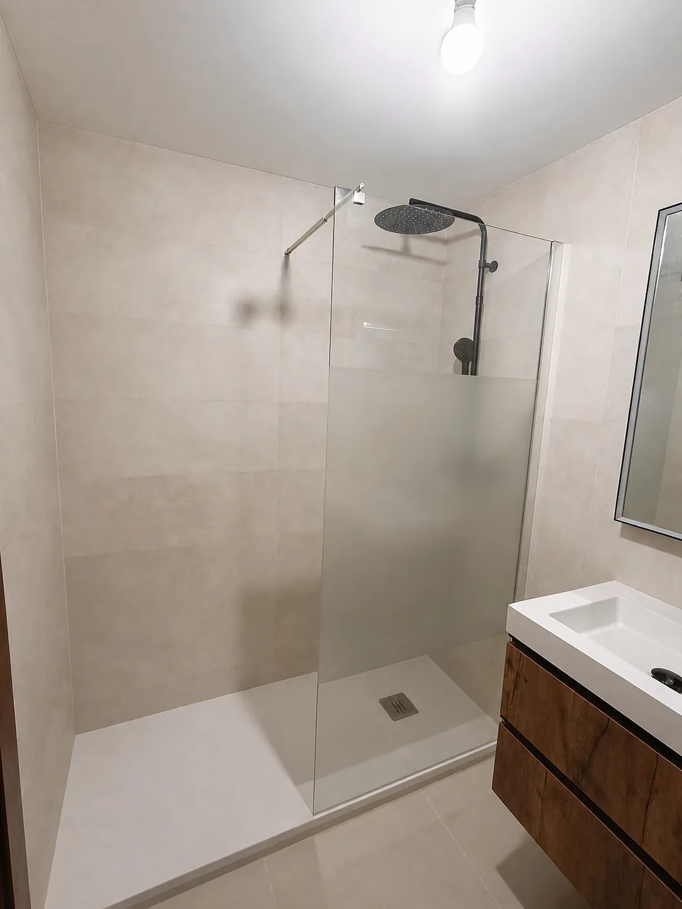

Antes
DepoisDuche amplo e visual limpo
Troca de banheira por base de duche, revestimento claro e arrumação discreta para ganhar espaço sem perder conforto.
Quero um resultado assimTransforme uma casa de banho antiga, fria ou pouco funcional num espaço moderno, seguro e fácil de manter. A Renova Mais trata da obra completa: planeamento, demolição, canalização, electricidade, revestimentos, loiças e acabamentos.
Pedido de orçamento
Conte-nos o estado actual da casa de banho, a zona e o prazo desejado. A equipa analisa o pedido e combina o próximo passo consigo.
Antes e depois
Estes exemplos visuais mostram o tipo de salto que procuramos entregar: mais luz, melhor circulação, materiais duráveis e uma casa de banho que parece realmente acabada.

Antes
DepoisTroca de banheira por base de duche, revestimento claro e arrumação discreta para ganhar espaço sem perder conforto.
Quero um resultado assim
Antes
DepoisIluminação melhor posicionada, espelho maior e materiais neutros para criar sensação de amplitude.
Quero um resultado assim
Antes
DepoisLayout mais inteligente, cores claras e loiças compactas para aproveitar cada centímetro.
Quero um resultado assim
Antes
DepoisRevestimentos coordenados, zona de duche mais funcional e detalhes que valorizam o imóvel no primeiro olhar.
Quero um resultado assimFotografias reais fornecidas pela Renova Mais, tratadas apenas para melhorar iluminação, nitidez e cor sem alterar a obra.
Obra completa
Protecção do espaço, remoção de loiças, revestimentos antigos e preparação para novas instalações.
Actualização dos pontos essenciais para duche, lavatório, sanita, iluminação e ventilação.
Atenção especial a zonas húmidas para reduzir risco de infiltrações e problemas futuros.
Aplicação de cerâmica, pavimento, juntas e acabamentos com foco em durabilidade e limpeza.
Instalação de base de duche, sanita, móvel, torneiras, resguardo, espelho e acessórios.
Revisão de acabamentos, limpeza da zona intervencionada e acompanhamento após obra.

Uma casa de banho bem remodelada melhora o conforto diário e aumenta a percepção de valor do imóvel.
Decisões que evitam problemas
Avaliamos acessos, humidade, pontos de água, electricidade e estado dos revestimentos antes de propor solução.
Ajudamos a escolher acabamentos resistentes, fáceis de limpar e adequados ao tamanho da casa de banho.
Planeamos a sequência dos trabalhos para reduzir atrasos, desperdício e decisões de última hora.
Processo
Envia o formulário ou fala connosco por WhatsApp com a localidade e o tipo de obra.
Observamos medidas, condições existentes, acessos e detalhes que influenciam o orçamento.
Recebe uma proposta clara, com trabalhos previstos, materiais e condições de execução.
Coordenamos os trabalhos até à entrega, com comunicação directa ao longo da obra.
Confiança
Uma casa de banho envolve canalização, electricidade, impermeabilização e acabamentos no mesmo espaço. A diferença está em coordenar esses trabalhos antes de partir paredes.
Orçamento transparente, prazos combinados, comunicação directa e cuidado com os detalhes que ficam escondidos depois do revestimento.
Damos prioridade a Cascais, Oeiras, Sintra e Amadora. Lisboa cidade é analisada mediante disponibilidade de agenda e enquadramento da obra.
FAQ
Não necessariamente. Pode ter materiais escolhidos ou pedir orientação. O importante é alinhar qualidade, prazo e disponibilidade antes da obra.
Damos prioridade a Cascais, Oeiras, Sintra e Amadora. Lisboa cidade pode ser analisada, mas fica dependente da disponibilidade de agenda e do enquadramento da obra.
Sim, quando tecnicamente faz sentido. Em alguns casos, uma intervenção parcial pode ficar limitada pelo estado da canalização ou impermeabilização existente.
Para uma remodelação completa, o valor sério depende da visita técnica. O formulário ajuda-nos a perceber urgência, localidade e tipo de intervenção.
Sim, dependendo da dimensão e condições. Avaliamos acessos, horários, gestão de resíduos e protecção das zonas comuns.
Envie o pedido agora. Se a obra estiver em Cascais, Oeiras, Sintra, Amadora ou numa zona próxima com agenda disponível, combinamos o próximo passo consigo.